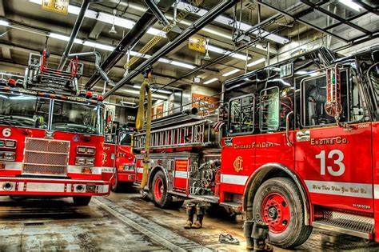
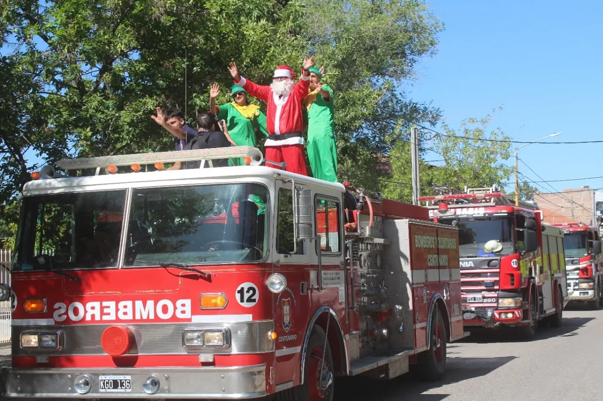
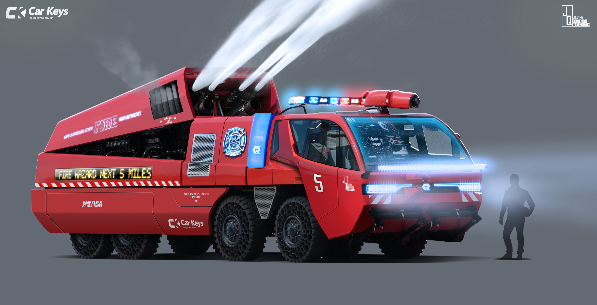

¡Nuestro cuerpo de bomberos logra asistencia Record!
El equipo de bomberos de nuestra comunidad ha respondido con rapidez y eficacia a un número sin precedentes de emergencias, desde incendios hasta rescates. Este logro refleja su dedicación y el respaldo de la comunidad. Agradecemos su valiente servicio y los animamos en su misión de mantenernos seguros.
Detrás de cada llamada atendida y cada emergencia manejada, hay un equipo de hombres y mujeres que dedican sus vidas a proteger a los demás. Su sacrificio y coraje merecen nuestro más profundo reconocimiento. En momentos de crisis, podemos confiar en nuestro cuerpo de bomberos para estar allí, listos para actuar.
09/01/2024

Incorporamos un nuevo camión a la Brigada
Nos complace anunciar la incorporación de un nuevo camión a nuestra brigada de bomberos. Equipado con tecnología de punta, este vehículo fortalecerá nuestra capacidad para enfrentar una amplia gama de emergencias, desde incendios forestales hasta accidentes de tráfico. Agradecemos el apoyo de nuestra comunidad en esta adquisición, que nos permite seguir sirviendo con valentía y dedicación para proteger la vida y la seguridad de todos.
Con este nuevo camión, estamos más preparados que nunca para hacer frente a los desafíos futuros. Su llegada representa un hito significativo en nuestro compromiso continuo con la seguridad y el bienestar de nuestra comunidad.
24/12/2023

¡Papa Noel nos pidió prestado el camión! HO, HO, HOO!
¡Atención a todos los presentes y a los que no están tan presentes! Les traemos una noticia que hará que hasta el Grinch se ponga a bailar: ¡Papá Noel ha venido a nosotros buscando prestado nuestro flamante camión de bomberos! Sí, así como lo oyen, el hombre de rojo ha decidido darle un giro a su clásica trineo y optar por un vehículo con un poco más de potencia. ¿Quién hubiera pensado que necesitaría un camión para llevar todos esos regalos?
Después de una larga charla con el jefe de la brigada, Papá Noel llegó a la conclusión de que nuestros bomberos eran los indicados para ayudarlo en esta tarea tan especial. Y aunque muchos puedan pensar que conducir un camión de bomberos es diferente a volar por los cielos en un trineo, estamos seguros de que el buen viejito se adaptará rápidamente. ¡Así que atentos, porque este año los regalos llegarán con sirenas y luces parpadeantes! ¡HO, HO, HOO!
16/09/2023

¡¿Elon Musk quiere trabajar con los Bomberos?!
En un emocionante desarrollo, Elon Musk ha anunciado su colaboración con los bomberos para revolucionar el diseño y la funcionalidad de los camiones de respuesta rápida. Este proyecto de remodelación busca integrar tecnología de punta, como sistemas de comunicación avanzados y herramientas de rescate innovadoras, para mejorar la eficiencia y la seguridad en las operaciones de emergencia.
Entre las características planificadas para el nuevo camión remodelado se incluyen paneles solares integrados en el techo para alimentar sistemas electrónicos a bordo, compartimentos de almacenamiento inteligentes para un acceso rápido y fácil a equipos de rescate, y sistemas de propulsión eléctrica para reducir la huella de carbono y los costos operativos.